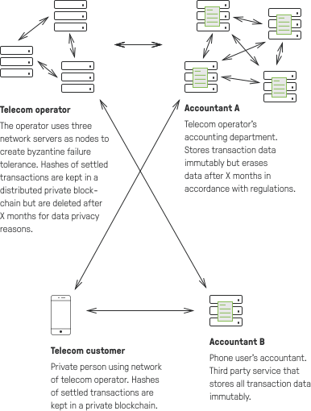
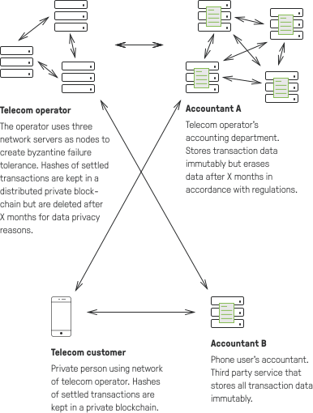

实时增加传输层的吞吐量
Polygravity的PSDP取代了TCP / UDP和其他相关的传输层协议，这些协议限制了网络中可能的并行连接数量。所有PSDP通信都支持实时语义，这意味着所有交易都可以实时发生。
最大并行连接数量：
- TCP: (216) = 65’536
- PSDP: (264) = 18’446’744’073’709’600’000

模块化安全结构
得益于高度模块化的系统安全结构，Polygravity系统可有效得抵御量子计算攻击和阻断服务攻击。每个交易方可以轻松地交换加密模块以防御全新的和不断变化的系统威胁。
加密和身份验证
PSDP具有双层加密功能，交易由生成交易的应用程序和运行应用程序的操作系统进行加密。这确保了潜在的窃听者无法识别执行通讯的应用程序。除此之外，基于传输层的身份验证只可识别彼此的通信方身份，进一步降低了DDoS攻击的可行性。

Polygravity的私人分类账提供不可更改的交易数据，最大限度确保客户的隐私
不可更改的数据
通过在通信方之间分配块哈希，交易分类账彼此互锁并且它们的数据是不可更改的。因此，ESDP数据可用作法庭证据，以证明已发生的交易是在交易双方的共识下执行的。


绝对的隐私
Polygravity不使用系统货币。因此，无需具有记录所有交易历史的全局透明公共分类帐。交易数据主要存储在交易方会计端的私人区块链/分类账（参见EADP标签）中，此私人分类账只有相应的交易方有权访问。
被遗忘的权利
根据数据保护法，客户有权删除其数据。由于经典的blockchain系统具有永久记录数据的属性，导致基于区块链的系统和隐私法之间产生了摩擦。Polygravity通过允许交易方在客户自己单独设置的时间段之后“忘记”数据存储区块来解决这个问题。然而，就像在复式簿记系统中一样，每个交易方都拥有与其他参与者进行的每笔交易的不可更改并且完全公证的记录。因此，即使交易方中的一方删除了整个交易历史记录，另一方方仍可以证明与删除记录方之间的交易。

Polygravity的共识算法可实现无限的系统扩容，并提供高端安全机制，有效地增强了交易双方相互不信任场景中的交易。
无限的交易吞吐量
Polygravity的EADP在本地验证交易双方之间的交易。因此，系统表现出O（1）的运行时复杂性，这意味着即便有新的交易方加入网络，系统效率并没有损失。换句话说：每个加入节点
相比之下，经典的基于区块链的网络使用全局共识算法，用于全局验证整个系统中交易，这意味着它们的交易吞吐量存在全局限制。换句话说：每个加入节点都会降低每个节点（ceteris paribus）的平均交易吞吐量能力，并且全局交易吞吐量的限制仍然保持不变。


客户端和账户簿记端
polygravaty的系统通过合约机制，引入第三方簿记列示的方法，在交易双方间达成共识
客户端
客户端是经过身份验证的设备。这些设备可以允许启动、授权事务。您可以将它们视为实际用户的硬件。客户端仅存储已结算的事务哈希，从而最小化客户端节点上的存储需求。
账户簿记端
账户簿记端是指第三方服务运营商 （比如像Polygravity和其他运营商）：- 确保客户在交易执行前达成共识。
- 校验交易，验证客户，清除和触发交易结算。
- 公证并将交易数据存储在客户端节点的私人分类帐或区块链中。
- 对商定的交易的执行负有法律责任。
- 可以访问各自客户端的交易数据
簿记共识协议的优势：
- 与其他基于区块链的交易网络相比，最大化系统的吞吐量能力。
- 明确地向交易中涉及的特定参与方分配法律责任，并证明这些参与方法律责任履行情况。
- 客户端节点可以异常“精简”（请参阅硬件选项卡），因为他们可以将区块链数据的管理和存储任务委派给相应的账户簿记端。
Polygravity的系统提供基于硬件组件的可扩展可能性。一方面，Polygravity对客户端的初始硬件要求配置低，但同时，随着客户端的硬件设置的提升，也能够提升系统整体的安全性和性能。
客户端硬件设置门槛低
Polygravity的客户可以使用相对基础的硬件。但是，硬件性能决定了系统的加密安全级别和交易吞吐量。如在EADP部分所述，有关交易的审计痕迹是存储在第三方簿记系统中，而非事务发起客户端节点上，这也使得客户端节点上的存储需求达到了最小化。
客户端最低硬件配置：
- IPV6
- 私钥的存储容量（高于256字节，视实际需求而定）
- 必须具有加密，解密，数字签名交易和创建验证码的计算能力。

线性可扩容的交易吞吐量
如EADP部分所述，Polygravity的系统不受体交易吞吐总量的限制。但是，在两个交易方之间，交易数据的包吞吐量取决于客户端的硬件处理能力。
Polygravity的系统初始负载测试，是在一台2009年四核 2.93 GHz i7 870处理器进行的。它能够在每秒中处理12000个交易包，每个交易的数据包是容量为512字节的随机数据。然而，交易处理的算法是完全可以同时并行的。硬件计算能力的加倍也将同时使交易吞吐量的处理能力加倍（其他条件保持不变）。 换句话说，更快的硬件能够线性地加速每秒交易的处理能力。就像目前中端性能服务器CPU，比如，AMD EPYC CPU，是16核，而不是4核。也就是说，它可以处理每秒48000（12000*4）个交易。当然，这是基于单一核心在过去9年中的计算速度没有变得更快的这样一个假设。
高可用性集群（HACs）和最高等级的安全性能
网络中的所有参与方都能够创建高可用集群（HACs），以确保最大限度的数据可用性和系统安全性。一个HAC由多个节点组成（当前最大节点数为12个）。这些节点通过私有的区块链同步并行，并同时作为一个单一的参与方（即客户端或者簿记端）运行。
对于一个参与方而言，可以将三个或者三个以上的节点进行组合，应用拜占庭容错技术。这意味着所有节点中的三分之一可以被恶意攻击而系统整体不会受到干扰。用一个公式来说：
- R>=3F+1
- R: 节点总数
- F: 可允许被攻击的节点数
- 举例来说
- R=3 , F <= ⅔
- R=3+n （多于三个节点） F<=(2+n)/3
由于私有分类帐的数据存储在簿记端，因此客户端通常对高可用性集群不太感兴趣。

 
